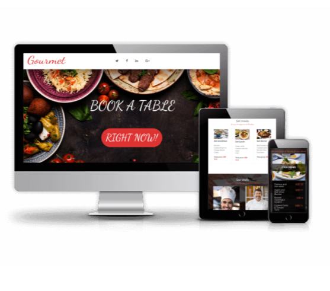
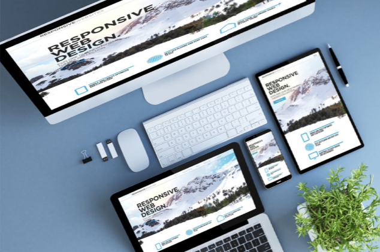
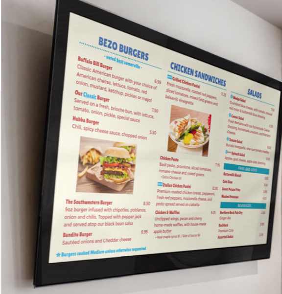

Professional Websites
A professional website is high quality, easy to navigate, mobile-friendly, and aesthetically pleasing. It should also meet consumer needs and expectations, be functional, and provide visitors with the information they're looking for right away. A professional website can be a marketing tool, a store platform, a display of talent, a communication channel, and an engine for branding.
Digital Litercy Skills Training
Digital literacy is the ability to use digital technology in everyday life. It involves cognitive and technical skills to find, evaluate, create, and communicate information using digital media platforms or typing. Digital literacy includes five digital competence areas and 21 digital competencies, such as Information and data literacy, Communication and collaboration, Digital content creation, Safety, and Problem-solving.
Digital Menus
A digital menu is an electronic version of a traditional paper menu, displayed on screens or accessible through mobile devices or kiosks. It lets customers view a restaurant's offerings digitally, often enhancing the experience with images and descriptions. Digital menu boards price ranges start at under $500, including a TV, to over $2,000 for solutions with high-end commercial displays and enterprise signage service subscriptions. Therefore, this means you can get started with digital signage for restaurants and cafes without breaking the bank.
Experiences
Take a look at what other clients had to say about their experience, what they learned, and how we helped!